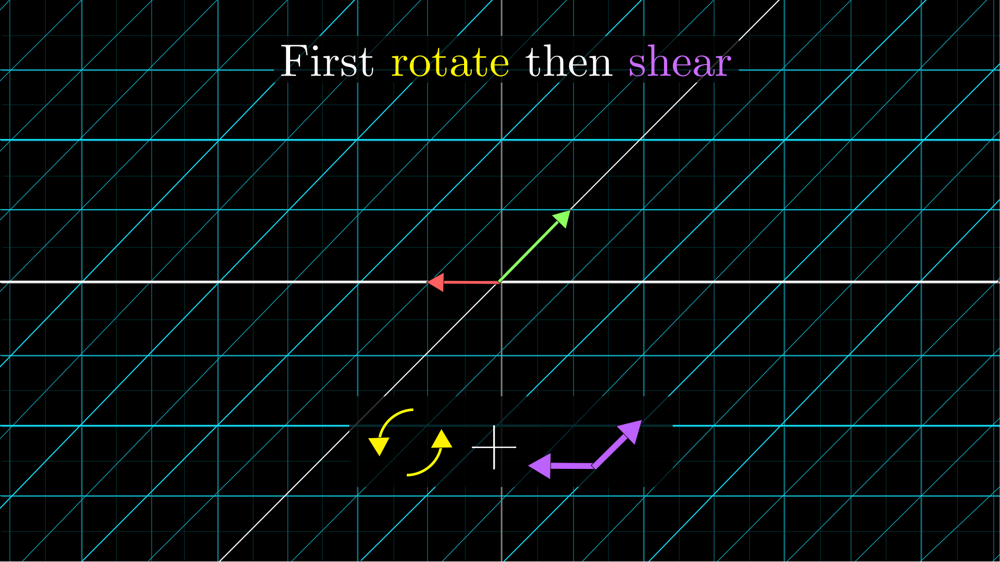

আগের অধ্যায়ে আমরা দেখেছি—রৈখিক রূপান্তর হলো ভেক্টরের ওপর একটি ফাংশন, আর ম্যাট্রিক্স হলো সেই রূপান্তরের সংক্ষিপ্ত লিখিত রূপ; এর কলাম দুটি বলে দেয় ভিত্তি ভেক্টর $\hat{i}$ ও $\hat{j}$ কোথায় অবতরণ করেছে। এই অধ্যায়ে আমরা দেখব কীভাবে একটি রূপান্তরের ঠিক পর আরেকটি রূপান্তর প্রয়োগ করলে তার সম্মিলিত প্রভাবকেও একটিমাত্র ম্যাট্রিক্স দিয়ে লেখা যায়—কোনো নতুন নিয়ম মুখস্থ না করেই।
স্কুলে শেখানো হয়—“প্রথম ম্যাট্রিক্সের সারি দিয়ে দ্বিতীয়টির কলাম গুণ করে যোগ করো।” কিন্তু কেন? এই অধ্যায়ের পুরো আলোচনার উদ্দেশ্য হলো দেখানো যে এই নিয়মটি কোনো যান্ত্রিক আবিষ্কার নয়, বরং রূপান্তরের ধারাবাহিক প্রয়োগেরই স্বাভাবিক বীজগাণিতিক রূপ।
স্কুল-কলেজে আমাদের প্রায়শই ম্যাট্রিক্স গুণনের একটি অদ্ভুত ও যান্ত্রিক নিয়ম শেখানো হয়—“প্রথম ম্যাট্রিক্সের প্রতিটি সারি দিয়ে দ্বিতীয় ম্যাট্রিক্সের প্রতিটি কলামের উপাদান গুণ করে যোগ করো।” কিন্তু কেন? এই আপাতদৃষ্টিতে খাপছাড়া নিয়মটি আসলে কোথা থেকে এলো?
গত পর্বে আমরা দেখেছি যে প্রতিটি ম্যাট্রিক্স হলো দ্বিমাত্রিক বা ত্রিমাত্রিক স্থানকে রূপান্তরিত করার একটি একক জ্যামিতিক প্রক্রিয়া—যেখানে গ্রিড রেখাগুলো সর্বদা সমান্তরাল ও সমদূরবর্তী থাকে এবং মূলবিন্দু সম্পূর্ণ স্থির থাকে।
কিন্তু বাস্তব জীবনে ও বিজ্ঞানে একটি রূপান্তর সম্পন্ন করার পর প্রায়শই তার ওপর আরেকটি রূপান্তর প্রয়োগ করার দরকার পড়ে। ধরা যাক, আপনি প্রথমে দ্বিমাত্রিক সমতলটিকে ঘড়ির কাঁটার বিপরীতে ৯০° কোণে ঘোরালেন (Rotation), এবং ঠিক তার পর সমতলটির ওপর একটি অনুভূমিক শিরিং বা মোচড় (Shear) প্রয়োগ করলেন।

শুরু থেকে শেষ পর্যন্ত পুরো সম্মিলিত প্রভাবটি নিজেই আরেকটি সম্পূর্ণ নতুন রৈখিক রূপান্তর! এই যৌথ রূপান্তরটিকে গণিতের ভাষায় বলা হয় দুটি পৃথক রূপান্তরের সংযোজন (Composition)।
লিনিয়ার অ্যালজেব্রার কেন্দ্রীয় দর্শনটি গভীরভাবে মনে রাখো: দুটি ম্যাট্রিক্সের গুণফল $AB$ হলো সেই একক যৌগিক রূপান্তর, যা প্রথমে রূপান্তর $B$ এবং ঠিক তার পর রূপান্তর $A$ প্রয়োগ করলে সামগ্রিক স্থানে ঘটে থাকে। অর্থাৎ গুণন আসলে ‘পরপর প্রয়োগ’-এরই আরেক নাম।
যেহেতু দুটি ধারাবাহিক রৈখিক রূপান্তরের সমন্বয় নিজেও একটি খাঁটি রৈখিক রূপান্তর, তাই এর নিজস্ব একটি একক ২×২ ম্যাট্রিক্স থাকবে। সেই ম্যাট্রিক্সটি আমরা কীভাবে বের করব? বরাবরের মতোই শিশুতোষ সহজ: শুধুমাত্র লক্ষ্য করুন পুরো প্রক্রিয়ার শেষে আমাদের দুটি আদি ভিত্তি ভেক্টর $\hat{i}$ (আই হ্যাট) এবং $\hat{j}$ (জে হ্যাট) শেষমেশ কোথায় গিয়ে পৌঁছাল!
আই হ্যাট ($\hat{i}$)-এর গতিপথ: আদিতে $\hat{i}=\begin{bmatrix}1\\0\end{bmatrix}$ ছিল। ৯০° ঘড়ির কাঁটার বিপরীতে ঘোরার পর এটি পৌঁছে গেল $\begin{bmatrix}0\\1\end{bmatrix}$-এ। এবার এই ভেক্টরটির ওপর অনুভূমিক শিরিং প্রয়োগ করা হলে এর $x$-স্থানাঙ্ক তার $y$-স্থানাঙ্কের পরিমাণ ডানে সরে যায়—ফলে এটি শেষ পর্যন্ত অবতরণ করে $\begin{bmatrix}1\\1\end{bmatrix}$-এ! সুতরাং যৌথ ম্যাট্রিক্সের প্রথম কলাম হবে $\begin{bmatrix}1\\1\end{bmatrix}$।
জে হ্যাট ($\hat{j}$)-এর গতিপথ: আদিতে $\hat{j}=\begin{bmatrix}0\\1\end{bmatrix}$ ছিল। ৯০° ঘোরার পর এটি পৌঁছে যায় $\begin{bmatrix}-1\\0\end{bmatrix}$-এ (ঋণাত্মক এক্স অক্ষ বরাবর)। যেহেতু এর $y$-স্থানাঙ্ক শূন্য, তাই অনুভূমিক শিরিং প্রয়োগ করলেও এটি হুবহু $\begin{bmatrix}-1\\0\end{bmatrix}$-এই অপরিবর্তিত থাকে! সুতরাং যৌথ ম্যাট্রিক্সের দ্বিতীয় কলাম হবে $\begin{bmatrix}-1\\0\end{bmatrix}$।
এবার একটি অতি গুরুত্বপূর্ণ বিষয় লক্ষ্য করো: আমরা যখন লিখি $AB\vec{v}$, তখন প্রথমে কোন রূপান্তরটি কার্যকর হয়? $B$ আগে, তারপর $A$! অর্থাৎ গুণনের এই লেখার ধারা ডান থেকে বামে পড়তে হয়—ভেক্টরের সবচেয়ে কাছে যে ম্যাট্রিক্স থাকে, সেটিই আগে কাজ করে।
বীজগণিতে আমরা যখন ফাংশনের কম্পোজিশন লিখি $f(g(x))$, তখন ইনপুট $x$-এর সবচেয়ে কাছে কে থাকে? অবশ্যই $g$! তাই আগে $g(x)$ এর মান বের হয়, তারপর তার ফলাফলের ওপর $f$ ফাংশন কাজ করে। ঠিক একইভাবে, ভেক্টর $\vec{v}$-এর সাথে লেগে থাকা ডানপাশের ম্যাট্রিক্স $B$ আগে কার্যকর হয়, এবং তার সামগ্রিক ফলাফলের ওপর বামপাশের ম্যাট্রিক্স $A$ কাজ করে। হিব্রু কিংবা আরবি পাঠকদের জন্য ডান থেকে বামে পড়া স্বাভাবিক হলেও, বাকি বিশ্বের পাঠকদের এটি সতর্কতার সাথে মনে রাখতে হয়!
যেহেতু দুটি ধারাবাহিক রৈখিক রূপান্তরের সমন্বয় নিজেও একটি খাঁটি রৈখিক রূপান্তর, তাই এর নিজস্ব একটি একক টু বাই টু ম্যাট্রিক্স থাকবে। সেই ম্যাট্রিক্সটি আমরা কীভাবে বের করব? বরাবরের মতোই শিশুতোষ সহজ: শুধুমাত্র লক্ষ্য করো পুরো প্রক্রিয়ার শেষে আমাদের দুটি আদি ভিত্তি ভেক্টর আই হ্যাট এবং জে হ্যাট শেষমেশ কোথায় গিয়ে পৌঁছাল!
আই হ্যাট ছিল এক শূন্য। নব্বই ডিগ্রি ঘোরার পর এটি পৌঁছায় শূন্য এক-এ। এবার অনুভূমিক শিরিং প্রয়োগ করলে এর $x$-স্থানাঙ্ক $y$-স্থানাঙ্কের পরিমাণ ডানে সরে গিয়ে চূড়ান্তভাবে অবতরণ করে এক, এক-এ! সুতরাং যৌথ ম্যাট্রিক্সের প্রথম কলাম হবে $\begin{bmatrix}1\\1\end{bmatrix}$।
আর জে হ্যাট ছিল শূন্য এক। নব্বই ডিগ্রি ঘোরার পর এটি পৌঁছায় মাইনাস এক শূন্য-তে। যেহেতু এর $y$-স্থানাঙ্ক শূন্য, তাই অনুভূমিক শিরিং প্রয়োগ করলেও এটি অপরিবর্তিত থাকে। ফলে দ্বিতীয় কলাম হয় $\begin{bmatrix}-1\\0\end{bmatrix}$।
এবার একটি অতি গুরুত্বপূর্ণ বিষয় লক্ষ্য করো: আমরা যখন লিখি $AB\vec{v}$, তখন প্রথমে কোন রূপান্তরটি কার্যকর হয়? বি আগে, তারপর এ! অর্থাৎ এটি ডান থেকে বামে পড়তে হয়। যেহেতু ভেক্টর $\vec{v}$ সবচেয়ে কাছে $B$ আছে, তাই $B\vec{v}$ আগে তৈরি হয়, তারপর তার ওপর $A$ বসে।
ফাংশন নোটেশনের কথা ভাবুন: আমরা যখন $f$ অব $g$ অব $x$ লিখি, ইনপুট $x$-এর সবচেয়ে কাছে থাকে $g$। তাই আগে $g$ কার্যকর হয়, তারপর তার ওপর $f$ কাজ করে। ঠিক তেমনি ভেক্টর $\vec{v}$-এর সবচেয়ে কাছে থাকা ডানপাশের ম্যাট্রিক্স $B$ আগে কাজ করে, আর বামপাশের ম্যাট্রিক্স $A$ পরে কার্যকর হয়।
এবার আসুন প্রতীকী বীজগণিত দিয়ে দেখা যাক যেকোনো দুটি সাধারণ টু বাই টু ম্যাট্রিক্সের জন্য সূত্রটি কীভাবে নিজে থেকেই বেরিয়ে আসে—কোনো সূত্র মুখস্থ না করেই!
প্রথম রূপান্তর $M_1$-এর পর আই হ্যাট পৌঁছায় প্রথম কলাম $\begin{bmatrix}e\\g\end{bmatrix}$-এ। এর ওপর দ্বিতীয় রূপান্তর $M_2$ প্রয়োগ করলে পাওয়া যায় $e\begin{bmatrix}a\\c\end{bmatrix}+g\begin{bmatrix}b\\d\end{bmatrix}=\begin{bmatrix}ae+bg\\ce+dg\end{bmatrix}$। এটিই গুণফল ম্যাট্রিক্সের প্রথম কলাম!
একইভাবে, জে হ্যাট প্রথম রূপান্তরের পর পৌঁছায় দ্বিতীয় কলাম $\begin{bmatrix}f\\h\end{bmatrix}$-এ। এর ওপর $M_2$ প্রয়োগ করলে পাওয়া যায় $f\begin{bmatrix}a\\c\end{bmatrix}+h\begin{bmatrix}b\\d\end{bmatrix}=\begin{bmatrix}af+bh\\cf+dh\end{bmatrix}$। এটি হলো গুণফল ম্যাট্রিক্সের দ্বিতীয় কলাম!
পাঠ্যবইয়ে যে বলা হয় “প্রথম ম্যাট্রিক্সের সারি দিয়ে দ্বিতীয় ম্যাট্রিক্সের কলামকে ডট গুণ করো”—তা মূলত এই ভিত্তি ভেক্টর রূপান্তরেরই সংক্ষিপ্ত হিসাব কৌশল! কিন্তু এর আসল হৃদয় হলো: দ্বিতীয় রূপান্তরের কলামগুলোকে প্রথম রূপান্তরের স্থানাঙ্ক দিয়ে স্কেল করে যোগ করা। জ্যামিতিক অর্থ বুঝে এই সূত্র মুখস্থ করলে তা অনেক বেশি টেকসই হয়।
বাস্তব জীবনের একটি উদাহরণ চিন্তা করো: আগে জুতো পরে তারপর মোজা পরা, আর আগে মোজা পরে তারপর জুতো পরা কি এক কথা? কখনই না! ঠিক তেমনি জ্যামিতিক রূপান্তরের ক্রম উল্টে দিলে পুরো স্থানাঙ্ক ব্যবস্থা বদলে যায়—এক কথায় $AB \neq BA$।
এবার আসুন প্রতীকী বীজগণিত দিয়ে দেখা যাক যেকোনো দুটি সাধারণ টু বাই টু ম্যাট্রিক্সের জন্য সূত্রটি কীভাবে নিজে থেকেই বেরিয়ে আসে—কোনো নিয়ম মুখস্থ না করেই!
ধরা যাক প্রথম রূপান্তর $M_1=\begin{bmatrix}e&f\\g&h\end{bmatrix}$ এবং দ্বিতীয় রূপান্তর $M_2=\begin{bmatrix}a&b\\c&d\end{bmatrix}$। আমরা $M_2M_1$-এর যৌথ ম্যাট্রিক্স বের করতে চাই। প্রথম রূপান্তরের পর $\hat{i}$ পৌঁছায় $M_1$-এর প্রথম কলাম $\begin{bmatrix}e\\g\end{bmatrix}$-এ।
এই $\begin{bmatrix}e\\g\end{bmatrix}$ ভেক্টরটির ওপর $M_2$ প্রয়োগ করলে আমরা জানি এটি হবে $M_2$-এর কলামগুলোর রৈখিক সমন্বয়: $e\begin{bmatrix}a\\c\end{bmatrix}+g\begin{bmatrix}b\\d\end{bmatrix}=\begin{bmatrix}ae+bg\\ce+dg\end{bmatrix}$। একইভাবে $\hat{j}$ থেকে পাই $f\begin{bmatrix}a\\c\end{bmatrix}+h\begin{bmatrix}b\\d\end{bmatrix}=\begin{bmatrix}af+bh\\cf+dh\end{bmatrix}$।
কিন্তু বাস্তব সংখ্যার গুণনের মতো ম্যাট্রিক্স গুণন কি বিনিময় বিধি মেনে চলে? কখনই নয়! $AB$ সাধারণত $BA$-এর সমান হয় না। অর্থাৎ ম্যাট্রিক্স গুণন একটি বিনিময়হীন অপারেশন—এটি এই অধ্যায়ের সবচেয়ে গুরুত্বপূর্ণ উপলব্ধিগুলোর একটি।
আগে জুতো পরে তারপর মোজা পরা, আর আগে মোজা পরে তারপর জুতো পরা কি এক কথা? কখনই না! ঠিক তেমনি জ্যামিতিক রূপান্তরের ক্রম উল্টে দিলে পুরো মহাবিশ্বের স্থানাঙ্ক ব্যবস্থা বদলে যায়। তাই সারি-কলামের সূত্র মুখস্থ করার আগে ক্রমের এই অর্থ বোঝা জরুরি।
বাস্তব সংখ্যার সাধারণ গুণনে $2\times 3 = 3\times 2 = 6$। কিন্তু স্থানিক রূপান্তরের ক্ষেত্রে ক্রম অদলবদল করলে মহাজাগতিক বিশৃঙ্খলা তৈরি হয়! আগের উদাহরণে আমরা প্রথমে ৯০° ঘুরিয়ে তারপর শিরিং দিয়েছিলাম, ফলে $\hat{i}$ পৌঁছেছিল $(1,1)$-এ। এবার ক্রম উল্টে দিন: আগে অনুভূমিক শিরিং করুন, তারপর ৯০° ঘোরান। শিরিংয়ের সময় $\hat{i}$ তার নিজের জায়গায় $(1,0)$-তেই স্থির থাকে; এবার ৯০° ঘোরালে এটি গিয়ে পৌঁছায় $(0,1)$-এ। পূর্বের $(1,1)$ এবং বর্তমানের $(0,1)$ সম্পূর্ণ ভিন্ন দুটি ভেক্টর!
একটি বিশেষ ম্যাট্রিক্স হলো ঐডেন্টিটি ম্যাট্রিক্স $I$ — এটি কিছুই করে না; যেকোনো ম্যাট্রিক্স $M$-এর সাথে গুণ করলে শুধু $M$-ই পাওয়া যায়। একইভাবে দুই অক্ষ-ই সমান পরিমাণে স্কেল করলে পাওয়া যায় $aI$; এই রকম ম্যাট্রিক্স সব ম্যাট্রিক্সের সাথেই বিনিময়যোগ্য।
ম্যাট্রিক্স গুণন বিনিময় বিধি না মানলেও, এটি সংযোগ বিধি (Associative Property) নিখুঁতভাবে মেনে চলে। অর্থাৎ বন্ধনী কোথায় বসানো হোক না কেন, চূড়ান্ত যৌগিক ম্যাট্রিক্স একই থাকে।
যদি আপনি স্কুল বা কলেজে বীজগণিতের সাহায্যে তিন-তিনটি ম্যাট্রিক্সের প্রতীকী গুণ করে এটি প্রমাণ করতে যান, তবে খাতার পর খাতা সমীকরণ লিখে হয়রান হয়ে যাবেন। কিন্তু জ্যামিতিক চোখে তাকালে এটি স্বতঃসিদ্ধভাবে জলের মতো পরিষ্কার!
লক্ষ্য করুন: $(AB)C$ মানে হলো—প্রথমে স্থানে রূপান্তর $C$ ঘটাও, তারপর $AB$-এর সম্মিলিত প্রভাব একযোগে প্রয়োগ করো। আর $A(BC)$ মানে হলো—প্রথমে ক্রমান্বয়ে রূপান্তর $C$ এবং $B$ ঘটাও, তারপর রূপান্তর $A$ প্রয়োগ করো।
উভয় ক্ষেত্রেই মহাবিশ্বের স্থানটি ঠিক একই ক্রমে প্রথমে $C$, তারপর $B$, এবং সবশেষে $A$-এর মধ্য দিয়েই যাত্রা করছে! প্রয়োগের এই মৌলিক ক্রম যেহেতু একচুলও বদলায়নি, তাই উভয়ের চূড়ান্ত সম্মিলিত ম্যাট্রিক্স অভিন্ন হতে বাধ্য।
নিচের ইন্টারেক্টিভ সিমুলেটরে তোমরা নিজের হাতে রূপান্তরের ক্রম অদলবদল করে দেখো এবং কুইজগুলোর উত্তর দিয়ে তোমার ধারণা যাচাই করে নাও। শুভ পদচারণা!
ম্যাট্রিক্স গুণন কেবল একটি হিসাবের কৌশল নয়—এটি একটি মানসিক হাতিয়ার। একে ব্যবহার করে আমরা নির্ণায়ক (determinant), আইগেনভ্যালু (eigenvalue), এবং রৈখিক সমীকরণের ব্যবস্থা—এই সবকিছুকে একই জ্যামিতিক দৃষ্টিতে দেখতে পারি। যখনই কোনো জটিল রূপান্তরকে ছোট ছোট অংশে ভেঙে বুঝতে হয়, তখন এই ‘পরপর প্রয়োগ’ের ধারণাই কাজে আসে।
কম্পিউটার গ্রাফিক্স ও রোবোটিক্সে এই ধারণা প্রতিদিন ব্যবহৃত হয়: একটিমাত্র ম্যাট্রিক্স দিয়ে পুরো স্থানকে ঘোরানো, স্কেল করা বা সরানো যায়, আর কয়েকটি ম্যাট্রিক্স গুণ করে জটিল চলনকে একক রূপান্তরে রূপ দেওয়া যায়। Grant Sanderson যেভাবে বলেন—ম্যাট্রিক্সকে বাদ দিয়ে চিন্তা করলেই প্রমাণ ছোট হয়; কিন্তু ম্যাট্রিক্সকে বোঝা ছাড়া সেই চিন্তাও সম্ভব নয়।
পরবর্তী অধ্যায়ে আমরা ত্রিমাত্রিক রৈখিক রূপান্তর নিয়ে কাজ করব, যেখানে এই একই ধারণাগুলো তিন মাত্রায় প্রসারিত হবে। তার আগে নিচের ল্যাবটিতে ক্রম অদলবদল করে $AB \neq BA$ নিজের চোখে যাচাই করে নাও।
নিচের ল্যাবটিতে দুটি রূপান্তরের ধারাবাহিক সংযোজন নিজের চোখে পর্যবেক্ষণ করুন। অ্যানিমেশন প্লে করে দেখুন কীভাবে প্রথম রূপান্তরের পর দ্বিতীয় রূপান্তরটি প্রযুক্ত হয়ে একক কম্পোজিট ফলাফল তৈরি করে, এবং “উভয়ের ক্রম অদলবদল” বোতামে ক্লিক করে যাচাই করুন কেন $AB \neq BA$!